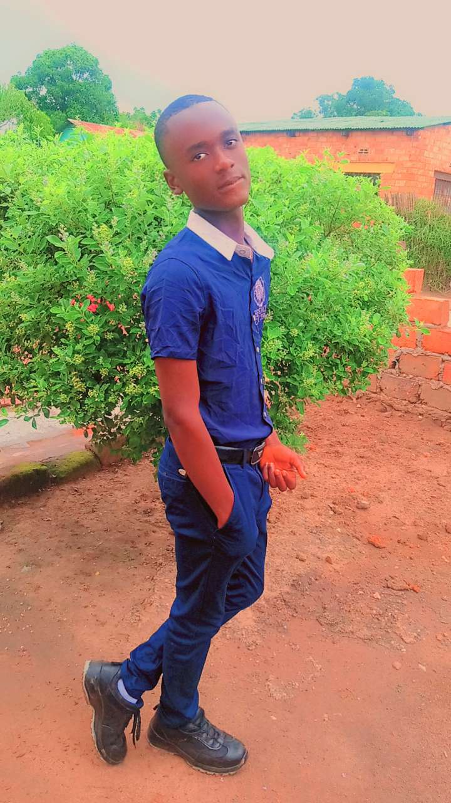

<!DOCTYPE html>
<html lang="en">
<head>
    <meta charset="UTF-8">
    <meta name="viewport" content="width=device-width, initial-scale=1.0">
    <title>Mon portofolio< /title>
</head>
<body>
<header>
    <div>
        <a href="Mon portofolio"></a>
    </div>
    <nav>
       <ul>
        <li><a href="">Accueil</a></li>
        <li><a href="">Projets</a></li>
        <li><a href="">passions</a></li>
        <li><a href="">Divertissement</a></li>
        <li><a href="">Contact</a></li>
       </ul> 
    </nav>
</header>
<main>
    <Section>
        <div>
            <h1>Bonjour,je suis Mery</h1>
            <p>Etudiante Passionne par le web</p>
            <a href="">voir mes projets</a>
        </div>
        <div>
            
        </div>
    </Section>
    <section>
        <H2>A propes de moi</H2>
        <p>Bonjour! je m'appel MERY BUYAMBA KASANGU et je suis etudiante dynamique
           et totive par programation web,gestion des donnée et réseaux, je suis 
           constamment pour l'opportinites d'apprentissage et un grand defi passionnant.</p>
           <p>Au cours de mes etudes, j'ai developpé des solides compétence en programation.
            je suis une personne sérieuse, qui aime travauille en équipe pour atteintre des 
            objectif est de participe à des projets innovant, obtenir un stage et approfodir
             mes compétences d'un outil developpement web.</p>
    </section>
    <section>
        <h2>Mes compétences</h2>
        <div>
            <table>
                <tr>
                    <th>categorie</th>
                    <th>competence</th>
                    <th>niveau</th>
                </tr>
                <tr>
                    <td>programation</td>
                    <td>html,css,javascrit</td>
                    <td>avencé</td>
                </tr>
                <tr>
                    <td>desgne</td>
                    <td>figma,photoschop(base)</td>
                    <td>intermediaire</td>
                </tr>
                <tr>
                    <td>lagues</td>
                    <td>français,anglais</td>
                    <td>avencé</td>
                </tr>
                <tr>
                    <td>outils</td>
                    <td>git,vc code,suit office</td>
                    <td>avencé</td>
                </tr>
                  <tr>
                    <td>soft skills</td>
                    <td>communication,réflechir,se débrouilles</td>
                  </tr>
            </table>
        </div>
    </section>
</main>
<footer>
    <h6><i>2026 Mery. Tout droits réservées</i></h6>
     
     
    
</footer> 
</body>
</html>